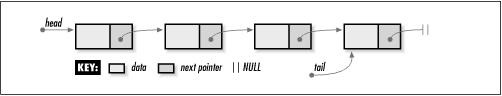
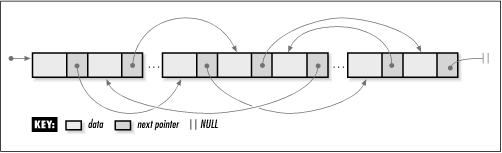

5.1 Description of Linked
Lists
Singly-linked lists
, usually simply called linked lists, are composed of
individual elements, each linked by a single pointer. Each
element consists of two parts: a data member and a pointer,
called the next pointer. Using
this two-member structure, a linked list is formed by setting
the next pointer of each
element to point to the element that follows it (see Figure
5.1). The next pointer of
the last element is set to NULL, a convenient sentinel marking
the end of the list. The element at the start of the list is
its head; the element at
the end of the list is its tail.
To access an element in a linked list, we
start at the head of the list and use the next pointers of successive elements
to move from element to element until the desired element is
reached. With singly-linked lists, the list can be traversed
in only one direction—from head to tail—because each element
contains no link to its predecessor. Therefore, if we start at
the head and move to some element, and then wish to access an
element preceding it, we must start over at the head (although
sometimes we can anticipate the need to know an element and
save a pointer to it). Often this weakness is not a concern.
When it is, we use a doubly-linked list or circular list.
Conceptually, one thinks of a linked list as
a series of contiguous elements. However, because these
elements are allocated dynamically (using malloc in C), it is important to
remember that, in actuality, they are usually scattered about
in memory (see Figure
5.2). The pointers from element to element therefore are
the only means by which we can ensure that all elements remain
accessible. With this in mind, we will see later that special
care is required when it comes to maintaining the links. If we
mistakenly drop one link, it becomes impossible to access any
of the elements from that point on in the list. Thus, the
expression "You are only as strong as your weakest link" is
particularly fitting for linked lists.


|